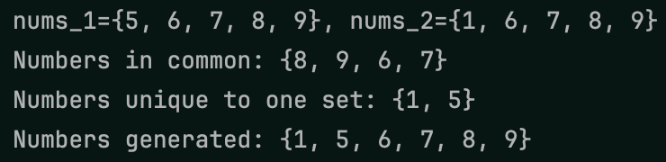
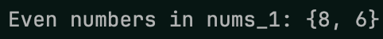
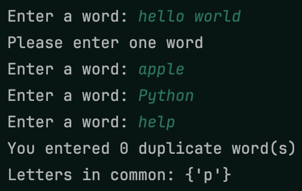

In this project, you’ll practice using sets in Python. Complete the prompts below to complete the project!
- Create a function called
rand_numswhich takes in a size, a lower limit, and an upper limit, and returns a set of random integers between the lower limit and the upper limit with a length equal to the size. Use this function to generate two sets of five random integers between one and 10, then print the sets, the numbers they have in common, the numbers unique to one set, and the numbers that were generated (i.e., all the numbers between both sets)
 Example for random numbers
- Print a message stating whether one of the previous sets contains a one. Try to do this using as little code as possible!
 Example for checking
membership
Example for checking
membership
- Create and print a set of the even numbers from one of the previous sets
 Example for even numbers
- Write a function called
get_wordwhich gets a word from a user. This function should keep asking the user for input until they enter a single word. This means the user shouldn’t be allowed to enter more than one word or no words! Create a set of the unique letters from three user-inputted words. Print the number of duplicate words that were entered, if any, then print the letters the inputted words have in common
 Example for user words